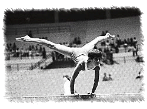

Vera Cerna (CSSR)
1979 World B Champion
|
 Medal Total
|
Vera was born on May 17, 1963, in Brno (Czech Republic) and won the beam title at the 1979 World Championships. When she was 6, she was selected to train in rhythmic gymnastics, but by age 8 she had convinced coaches to let her switch to sports gymnastics. It was a good decision, because by age 11 she was good enough to join the junior national team. That same year, she competed in her first international meet, in a dual match with Hungary. She finished 18th at her first major international competition, the 1977 European Championships, but quickly rose to prominence, finishing 6th overall and winning silver on the beam at the 1977 World Cup. A year later at the 1978 World Cup, she finished just out of the all-around medals but won gold on the beam and silver on the uneven bars. She became the world beam champion at the 1979 Worlds.
At an Olympic training camp in Nymburk, Vera sustained a serious injury - she cracked her 3rd lumbar vertebra and 2 discs - just weeks before the Moscow Games. She spent the next two months in a hospital in Brno. Vera graduated from Brno University of Technology and worked with the Brno police department as a dispatcher for several years. Twice married and divorced, and the mother of three (twin daughters Kristina and Lucie, and son Daniel), she was diagnosed with a brain tumor in 2003 and underwent surgery that left her partially paralyzed. Her condition improved with
rehabilitation although she still had difficulty walking and was blind in one eye. Vera died on September 30, 2024.
Competition Results